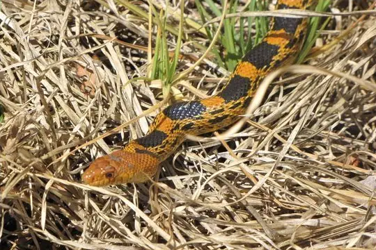
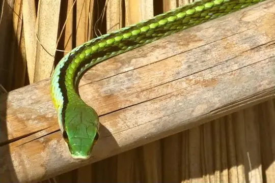
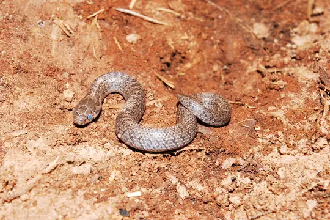
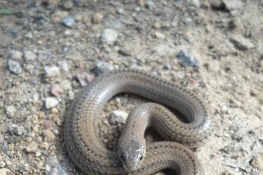
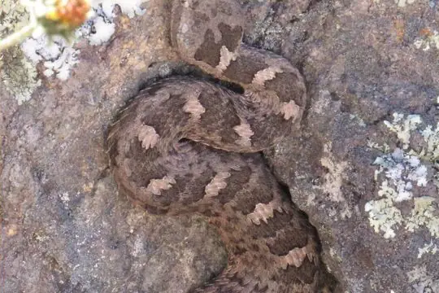

Snakes around Tlalnepantla
Estado de México, Mexico · 19.54°N, 99.19°W
Tlalnepantla is a city in Estado de México, Mexico. 23 snake species are recorded in Estado de México in SnakeList.
- 23species
- 7venomous
- 16non-venomous
- 3families
These are the snakes of Estado de México, not of Tlalnepantla itself. SnakeList records snakes by state or province, not by city, so this page lists the 23 species recorded anywhere in Estado de México, the state or province Tlalnepantla is in. Many of them may not live in or near the city.
Most widely recorded
The species here that have research-grade iNaturalist records in the most places across their whole range - not just in Estado de México. That shows how often people have photographed them, not how many live here.
 Ringneck SnakeDiadophis punctatus
Ringneck SnakeDiadophis punctatus Speckled RacerDrymobius margaritiferus
Speckled RacerDrymobius margaritiferus
Mexican Bull SnakePituophis deppei Black-striped Snake (imperialis)Coniophanes imperialis
Black-striped Snake (imperialis)Coniophanes imperialis
Pacific Coast Parrot SnakeLeptophis diplotropis
Largenose Earth SnakeConopsis nasus
Lined Tolucan EarthsnakeConopsis lineata
Queretaran Dusky RattlesnakeCrotalus aquilus
Venomous and non-venomous
Venomous: 7Non-venomous: 16
7 are listed by SnakeList as dangerous to people: Balsas Coral Snake Micrurus laticollaris, Cross-banded Mountain Rattlesnake Crotalus transversus, Mexican Pygmy Rattlesnake Crotalus ravus, Mexican Smallhead Rattlesnake Crotalus intermedius, Northwestern Neotropical Rattlesnake Crotalus culminatus, Queretaran Dusky Rattlesnake Crotalus aquilus, Tlaloc's Rattlesnake Crotalus tlaloci.
Snake families
Habitats (rough estimate)
How many of its living snakes have each kind of habitat in SnakeList’s estimate. That estimate comes from every country, state and province where each snake is recorded - not from a survey of Estado de México, and not checked species by species.
Who described them
The scientists who first described its most widely recorded snakes, and when.
- Ringneck Snake Diadophis punctatus -
- Speckled Racer Drymobius margaritiferus -
- Mexican Bull Snake Pituophis deppei -
- Black-striped Snake (imperialis) Coniophanes imperialis -
- Pacific Coast Parrot Snake Leptophis diplotropis -
- Largenose Earth Snake Conopsis nasus -
- Lined Tolucan Earthsnake Conopsis lineata -
- Queretaran Dusky Rattlesnake Crotalus aquilus -
Names and dates come from SnakeList’s reviewed species accounts; the others are looked up on Wikidata (CC0) when this page opens.
Nearby cities
The closest cities in SnakeList’s city list, as the crow flies.
- Azcapotzalco 6 km · Ciudad de México, Mexico
- Ciudad López Mateos 7 km · Estado de México, Mexico
- Buenavista 8 km · Estado de México, Mexico
- Naucalpan de Juárez 8 km · Estado de México, Mexico
- Gustavo Adolfo Madero 10 km · Ciudad de México, Mexico
- Cuauhtémoc 12 km · Ciudad de México, Mexico
- Cuautitlán Izcalli 12 km · Estado de México, Mexico
- Miguel Hidalgo 12 km · Ciudad de México, Mexico
Other cities in Estado de México
- Ecatepec de Morelos
- Ciudad Nezahualcoyotl
- Naucalpan de Juárez
- Santa María Chimalhuacán
- Toluca
- Ciudad López Mateos
- Cuautitlán Izcalli
- Xico
- Ixtapaluca
- Nicolás Romero
- Coacalco
- Ojo de Agua
- Buenavista
All 23 species of Estado de México
- Balsas Coral Snake Micrurus laticollaris venomous
- Black-striped Snake (imperialis) Coniophanes imperialis
- Cincuate Bull Snake Pituophis lineaticollis
- Cross-banded Mountain Rattlesnake Crotalus transversus venomous
- Deppe's Centipede Snake Tantilla deppei
- Largenose Earth Snake Conopsis nasus
- Lined Tolucan Earthsnake Conopsis lineata
- Longtail Alpine Garter Snake Thamnophis scalaris
- Mexican Bull Snake Pituophis deppei
- Mexican Patchnose Snake Salvadora mexicana
- Mexican Pygmy Rattlesnake Crotalus ravus venomous
- Mexican Smallhead Rattlesnake Crotalus intermedius venomous
- Michoacán Ground Snake Sonora michoacanensis
- Northwestern Neotropical Rattlesnake Crotalus culminatus venomous
- Pacific Coast Parrot Snake Leptophis diplotropis
- Potosí Earth Snake Geophis latifrontalis
- Queretaran Dusky Rattlesnake Crotalus aquilus venomous
- Ringneck Snake Diadophis punctatus
- Speckled Racer Drymobius margaritiferus
- Splendid Cat-eyed Snake Leptodeira splendida
- Striped Road Guarder Conophis vittatus
- Tlaloc's Rattlesnake Crotalus tlaloci venomous
- Two-lined Mexican Earth Snake Conopsis biserialis
No snake here matches that.